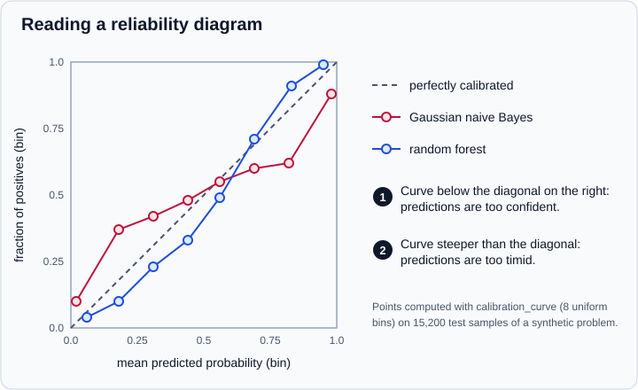

Probability Calibration
|
This content was generated with the assistance of AI and should be verified against the official documentation before being relied on in production. |
This page targets scikit-learn 1.9 (1.9.1 at the time of writing) with NumPy 2.5 and pandas 3.1, and every example was run on Python 3.13.18, NumPy 2.5.4, pandas 3.1.0 and scikit-learn 1.9.1 in October 2026. Examples target Python 3.13 or 3.14.
A classifier’s predict_proba returns numbers between 0 and 1, but not every model returns probabilities you can take at face value. A well calibrated classifier is one where, among the samples that receive a predicted probability near 0.8, about 80% really belong to the positive class. Ranking quality (ROC AUC) and calibration are different properties: a model can order cases perfectly and still be wildly over- or under-confident. When the probability itself drives a decision (expected cost, risk scores, thresholds chosen from a business rule, combining models), calibration matters. When only the ranking matters, it does not.
The conceptual side (when to calibrate, how it relates to thresholds and cost) is in Model Evaluation & Validation. This page covers the scikit-learn tools: measuring calibration, and CalibratedClassifierCV to repair it. Metrics such as log loss and the Brier score are described in Metrics & Scoring, moving the decision threshold in Tuning the Decision Threshold, and wrapping an already fitted model in FrozenEstimator.
Measuring calibration
The reliability diagram
A calibration curve (reliability diagram) groups predictions into bins, then plots the mean predicted probability of each bin on the x-axis against the observed fraction of positives in that bin on the y-axis. A perfectly calibrated model lies on the diagonal.

Marker 1 in the figure labels the naive Bayes curve: above the diagonal on the left and below it on the right, the signature of probabilities pushed too close to 0 and 1. Marker 2 is the random forest: below the diagonal on the left and above it on the right, the signature of averaged predictions that rarely reach the extremes. Both patterns are typical of their families, and the reasons are explained further down.
from sklearn.calibration import calibration_curve
from sklearn.datasets import make_classification
from sklearn.ensemble import RandomForestClassifier
from sklearn.model_selection import train_test_split
from sklearn.naive_bayes import GaussianNB
X, y = make_classification(n_samples=20000, n_features=20, n_informative=2, n_redundant=2,
random_state=42)
X_train, X_rest, y_train, y_rest = train_test_split(X, y, train_size=1000, random_state=42)
X_calib, X_test, y_calib, y_test = train_test_split(X_rest, y_rest, test_size=0.8, random_state=42)
print(X_train.shape, X_calib.shape, X_test.shape)
for name, model in [("naive Bayes", GaussianNB()),
("random forest", RandomForestClassifier(random_state=0))]:
proba = model.fit(X_train, y_train).predict_proba(X_test)[:, 1]
frac_pos, mean_pred = calibration_curve(y_test, proba, n_bins=8)
print(name)
print(" mean predicted:", mean_pred.round(2))
print(" fraction of +: ", frac_pos.round(2))
frac_pos, mean_pred = calibration_curve(y_test, proba, n_bins=5, strategy="quantile")
print("random forest, quantile bins:", mean_pred.round(2), frac_pos.round(2))Output:
(1000, 20) (3800, 20) (15200, 20) naive Bayes mean predicted: [0.02 0.18 0.31 0.44 0.56 0.69 0.82 0.98] fraction of +: [0.1 0.37 0.42 0.48 0.55 0.6 0.62 0.88] random forest mean predicted: [0.06 0.18 0.31 0.44 0.56 0.69 0.83 0.95] fraction of +: [0.04 0.1 0.23 0.33 0.49 0.71 0.91 0.99] random forest, quantile bins: [0.05 0.18 0.49 0.9 0.97] [0.04 0.1 0.42 0.97 0.99]
Source: scikit-learn: Calibration curves
calibration_curve(y_true, y_prob, *, pos_label=None, n_bins=5, strategy="uniform") returns the fraction of positives first and the mean predicted probability second (the opposite of the order on the plot). The two binning strategies matter:
-
strategy="uniform"(the default) uses equal-width bins. Sparse bins near 0 or 1 are noisy. -
strategy="quantile"uses bins with the same number of samples, which makes every point comparably reliable but makes the x-spacing uneven.
Few bins hide miscalibration and many bins make each point noisy; thousands of samples are needed for a stable eight-bin curve. The histogram of predictions below the curve in the user guide’s figures is the companion check: it shows where the model actually puts its mass.
An upcoming change: the unreleased 1.10 development line adds n_bins="cube_root" (the number of bins becomes the cube root of the sample count, rounded up) and announces that the defaults will change to strategy="quantile" and n_bins="cube_root" in 1.12. Pass both explicitly if your code must give the same bins across versions.
CalibrationDisplay.from_estimator and from_predictions draw the curve with a histogram of predictions, and CalibrationDisplay.from_predictions accepts arrays of probabilities from any source.
import matplotlib
matplotlib.use("Agg")
import matplotlib.pyplot as plt
from sklearn.calibration import CalibrationDisplay
from sklearn.datasets import make_classification
from sklearn.ensemble import RandomForestClassifier
from sklearn.linear_model import LogisticRegression
from sklearn.model_selection import train_test_split
from sklearn.naive_bayes import GaussianNB
X, y = make_classification(n_samples=20000, n_features=20, n_informative=2, n_redundant=2,
random_state=42)
X_train, X_rest, y_train, y_rest = train_test_split(X, y, train_size=1000, random_state=42)
X_calib, X_test, y_calib, y_test = train_test_split(X_rest, y_rest, test_size=0.8, random_state=42)
fig, ax = plt.subplots(figsize=(5, 5))
for name, model in [("logistic", LogisticRegression()), ("naive Bayes", GaussianNB()),
("random forest", RandomForestClassifier(random_state=0))]:
model.fit(X_train, y_train)
CalibrationDisplay.from_estimator(model, X_test, y_test, n_bins=8, name=name, ax=ax)
fig.savefig("calibration-curves.png")
print("saved calibration-curves.png")Output:
saved calibration-curves.png
Scores that include calibration
brier_score_loss and log_loss are strictly proper scoring rules. They improve when probabilities become more honest, but they also reward discrimination (resolution) and are limited by the noise in the data. A lower Brier loss therefore does not prove that a model is better calibrated, because it may simply be a more discriminating model. To judge calibration alone, plot the curve, or compute a binned calibration error yourself:
import numpy as np
from sklearn.calibration import calibration_curve
from sklearn.datasets import make_classification
from sklearn.linear_model import LogisticRegression
from sklearn.model_selection import train_test_split
def expected_calibration_error(y_true, proba, n_bins=10):
"""Weighted mean gap between predicted probability and observed frequency."""
bins = np.linspace(0.0, 1.0, n_bins + 1)
ids = np.clip(np.digitize(proba, bins[1:-1]), 0, n_bins - 1)
total = 0.0
for b in range(n_bins):
mask = ids == b
if mask.any():
total += mask.mean() * abs(proba[mask].mean() - y_true[mask].mean())
return total
X, y = make_classification(n_samples=5000, random_state=0)
X_tr, X_te, y_tr, y_te = train_test_split(X, y, random_state=0)
proba = LogisticRegression().fit(X_tr, y_tr).predict_proba(X_te)[:, 1]
print(round(expected_calibration_error(y_te, proba), 4))Output:
0.0119
This helper is not part of scikit-learn; it is the usual "expected calibration error" computed on equal-width bins, and like the curve it depends on the bin choice.
Which models are usually calibrated?
-
LogisticRegressionis often well calibrated on its own because its loss uses the canonical (logit) link. It is not guaranteed when the model is misspecified or the regularisation is badly tuned. -
GaussianNBpushes probabilities toward 0 and 1, because its conditional-independence assumption is violated when features are redundant. -
RandomForestClassifierand other bagging methods average many trees and have difficulty producing predictions near 0 and 1, giving the characteristic sigmoid-shaped curve. -
Maximum-margin methods (
LinearSVC,SVC) show an even more pronounced sigmoid shape, and have no probabilities at all unless you add them. -
Boosted trees and neural networks vary with the loss and the training length. Always measure rather than assume.
Calibrating with CalibratedClassifierCV
Calibration fits a small regression model (the calibrator) that maps the classifier’s output (decision_function or predict_proba) to a probability in [0, 1]. The calibrator must be fitted on data the classifier has not seen: classifier output on its own training data is too good, and a calibrator fitted on it pushes probabilities closer to 0 and 1 than they should be.
CalibratedClassifierCV(estimator=None, *, method="sigmoid", cv=None, n_jobs=None, ensemble="auto") solves this with cross-validation, and has these parameters:
-
estimator: the classifier to calibrate. The default,None, uses aLinearSVC. -
method:"sigmoid","isotonic"or"temperature". -
cv: the splitting strategy:None(5 folds, stratified for classification), an integer, a splitter, or an iterable of (train, test) index pairs. -
ensemble: how the folds are used (explained next). The default"auto"was added in 1.6. -
n_jobs: parallelism over folds.
ensemble=True: one calibrated classifier per fold
For each fold, a clone of the estimator is trained on the training part, predicts the held-out part, and that output fits a calibrator. The result is an ensemble of k (classifier, calibrator) pairs in calibrated_classifiers_, and predict_proba is the average over the pairs. This gives the usual ensembling benefit (slightly more accurate and well calibrated), at the price of k fitted models.
ensemble=False: calibrate cross-validated predictions
cross_val_predict produces unbiased predictions for all rows, the calibrator is fitted on them, and the final classifier is the estimator trained once on all the data. This is cheaper, gives a smaller model and faster predictions, and calibrated_classifiers_ contains a single pair.
With the default ensemble="auto" scikit-learn uses False when the estimator is a FrozenEstimator and True otherwise. When the splits are stratified, every class should appear in the training and the held-out part of every fold; a class absent from a training part gets probability 0 for that pair, and a class absent from a held-out part makes its calibrator ineffective.
from sklearn.calibration import CalibratedClassifierCV
from sklearn.datasets import make_classification
from sklearn.ensemble import RandomForestClassifier
from sklearn.metrics import brier_score_loss, log_loss, roc_auc_score
from sklearn.model_selection import train_test_split
from sklearn.naive_bayes import GaussianNB
X, y = make_classification(n_samples=20000, n_features=20, n_informative=2, n_redundant=2,
random_state=42)
X_train, X_rest, y_train, y_rest = train_test_split(X, y, train_size=1000, random_state=42)
X_calib, X_test, y_calib, y_test = train_test_split(X_rest, y_rest, test_size=0.8, random_state=42)
def report(name, proba):
print(f"{name:26s} brier={brier_score_loss(y_test, proba):.4f} "
f"log loss={log_loss(y_test, proba):.4f} auc={roc_auc_score(y_test, proba):.4f}")
report("GaussianNB raw", GaussianNB().fit(X_train, y_train).predict_proba(X_test)[:, 1])
for method in ("sigmoid", "isotonic"):
cal = CalibratedClassifierCV(GaussianNB(), method=method, cv=5).fit(X_train, y_train)
report(f"GaussianNB {method}", cal.predict_proba(X_test)[:, 1])
rf = RandomForestClassifier(random_state=0)
report("RandomForest raw", rf.fit(X_train, y_train).predict_proba(X_test)[:, 1])
for method in ("sigmoid", "isotonic"):
cal = CalibratedClassifierCV(RandomForestClassifier(random_state=0), method=method, cv=5)
cal.fit(X_train, y_train)
report(f"RandomForest {method}", cal.predict_proba(X_test)[:, 1])Output:
GaussianNB raw brier=0.1398 log loss=0.5375 auc=0.9036 GaussianNB sigmoid brier=0.1326 log loss=0.4249 auc=0.9039 GaussianNB isotonic brier=0.1251 log loss=0.5145 auc=0.9035 RandomForest raw brier=0.0764 log loss=0.2884 auc=0.9569 RandomForest sigmoid brier=0.0746 log loss=0.2566 auc=0.9569 RandomForest isotonic brier=0.0734 log loss=0.2562 auc=0.9557
The calibrated models are scored on a test set that played no part in either fitting. Naive Bayes improves clearly in log loss (0.54 to 0.42 with the sigmoid) and the forest improves slightly; AUC is essentially unchanged, because calibration is a monotonic re-mapping.
Adding probabilities to models that have none
A classifier without predict_proba (such as LinearSVC) can be wrapped to produce probabilities, from decision_function output.
from sklearn.calibration import CalibratedClassifierCV
from sklearn.datasets import make_classification
from sklearn.model_selection import train_test_split
from sklearn.svm import LinearSVC
X, y = make_classification(n_samples=2000, n_informative=4, random_state=0)
X_train, X_test, y_train, y_test = train_test_split(X, y, random_state=0)
svc = LinearSVC(random_state=0).fit(X_train, y_train)
print("LinearSVC has predict_proba:", hasattr(svc, "predict_proba"))
cal = CalibratedClassifierCV(LinearSVC(random_state=0), cv=5).fit(X_train, y_train)
print(cal.predict_proba(X_test[:2]).round(3), cal.classes_, len(cal.calibrated_classifiers_))
single = CalibratedClassifierCV(LinearSVC(random_state=0), cv=5, ensemble=False).fit(X_train, y_train)
print(len(single.calibrated_classifiers_))Output:
LinearSVC has predict_proba: False [[0.823 0.177] [0.188 0.812]] [0 1] 5 1
SVC(probability=True) is deprecated
SVC(probability=True) runs an internal five-fold cross-validated Platt scaling of its own. In 1.9 the probability parameter (and the probA_ and probB_ attributes) were deprecated because the implementation is not thread-safe, with removal planned for 1.11. The replacement is exactly the pattern above.
import warnings
from sklearn.calibration import CalibratedClassifierCV
from sklearn.datasets import make_classification
from sklearn.svm import SVC
X, y = make_classification(n_samples=300, random_state=0)
with warnings.catch_warnings(record=True) as caught:
warnings.simplefilter("always")
SVC(probability=True, random_state=0).fit(X, y)
print(caught[0].category.__name__)
print(str(caught[0].message)[:100], "...")
model = CalibratedClassifierCV(SVC(random_state=0), ensemble=False, cv=5).fit(X, y)
print(model.predict_proba(X[:2]).round(3))Output:
FutureWarning The `probability` parameter was deprecated in 1.9 and will be removed in version 1.11. Use `Calibrat ... [[0.019 0.981] [0.005 0.995]]
The three methods
Sigmoid (Platt scaling)
method="sigmoid" fits a logistic function p = 1 / (1 + exp(A * f + B)) to the classifier output f by maximum likelihood, with two parameters. It rests on the assumption that the distortion can be undone by a sigmoid, which was shown empirically for SVMs, and it works best when the calibration errors are symmetric. It is the sensible choice for small calibration sets, or for an under-confident model. For very uncalibrated classifiers on very imbalanced data it has an advantage: it fits an intercept that can shift the decision boundary when the classifier is biased toward the majority class.
Isotonic regression
method="isotonic" fits a non-parametric, non-decreasing step function. It can correct any monotonic distortion, but is more prone to overfitting. The guidance in the user guide is that it performs as well as or better than the sigmoid when there are enough calibration samples (roughly more than 1000) and is not recommended with far fewer. A direct experiment on the random forest from above, calibrating a frozen model with calibration sets of increasing size, shows the effect.
import numpy as np
from sklearn.calibration import CalibratedClassifierCV
from sklearn.datasets import make_classification
from sklearn.ensemble import RandomForestClassifier
from sklearn.frozen import FrozenEstimator
from sklearn.metrics import brier_score_loss, roc_auc_score
from sklearn.model_selection import train_test_split
X, y = make_classification(n_samples=20000, n_features=20, n_informative=2, n_redundant=2,
random_state=42)
X_train, X_rest, y_train, y_rest = train_test_split(X, y, train_size=1000, random_state=42)
X_pool, X_test, y_pool, y_test = train_test_split(X_rest, y_rest, test_size=0.8, random_state=42)
rf = RandomForestClassifier(random_state=0).fit(X_train, y_train)
raw = rf.predict_proba(X_test)[:, 1]
print("raw brier", round(brier_score_loss(y_test, raw), 4), "auc", round(roc_auc_score(y_test, raw), 4),
"distinct values", len(np.unique(raw)))
for n in (100, 400, 3800):
row = []
for method in ("sigmoid", "isotonic"):
cal = CalibratedClassifierCV(FrozenEstimator(rf), method=method).fit(X_pool[:n], y_pool[:n])
p = cal.predict_proba(X_test)[:, 1]
row.append(f"{method}: brier={brier_score_loss(y_test, p):.4f} auc={roc_auc_score(y_test, p):.4f} "
f"distinct={len(np.unique(p))}")
print(f"n={n:<5d}", " | ".join(row))Output:
raw brier 0.0764 auc 0.9569 distinct values 101 n=100 sigmoid: brier=0.0740 auc=0.9569 distinct=101 | isotonic: brier=0.0787 auc=0.9496 distinct=21 n=400 sigmoid: brier=0.0738 auc=0.9569 distinct=101 | isotonic: brier=0.0746 auc=0.9550 distinct=14 n=3800 sigmoid: brier=0.0738 auc=0.9569 distinct=101 | isotonic: brier=0.0726 auc=0.9566 distinct=39
With 100 calibration rows the isotonic map is worse than no calibration at all, with 400 it barely beats it and still loses to the sigmoid, and only with 3800 does it become the best of the three. Isotonic regression also creates ties (the number of distinct probabilities collapses from 101 to a few dozen), so ranking metrics such as ROC AUC can drop slightly. The sigmoid is a strictly increasing transformation and keeps the ranking exactly: use it when preserving AUC matters.
Temperature scaling
method="temperature" (added in 1.8) is made for multiclass problems. It divides the logits by a single learned temperature T and applies the softmax, softmax(z / T), with T found by minimising the log loss on the calibration data. It has one parameter regardless of the number of classes, and since dividing by a positive number never changes which logit is largest, it does not change the predicted class or the accuracy. Probabilities are converted to logits through a logarithm when the estimator has no decision_function. It is the standard repair for over-confident neural networks and over-fitted logistic models.
from sklearn.calibration import CalibratedClassifierCV
from sklearn.datasets import make_classification
from sklearn.frozen import FrozenEstimator
from sklearn.linear_model import LogisticRegression
from sklearn.metrics import accuracy_score, log_loss
from sklearn.model_selection import train_test_split
X, y = make_classification(n_samples=6000, n_features=20, n_informative=6, n_classes=4,
n_clusters_per_class=1, random_state=0)
X_a, X_b, y_a, y_b = train_test_split(X, y, test_size=0.5, random_state=0)
X_cal, X_test, y_cal, y_test = train_test_split(X_b, y_b, test_size=0.7, random_state=0)
# a deliberately over-fitted, over-confident model: little data and almost no regularisation
big = LogisticRegression(C=1e4, max_iter=2000).fit(X_a[:150], y_a[:150])
print(f"raw log loss={log_loss(y_test, big.predict_proba(X_test)):.4f} "
f"accuracy={accuracy_score(y_test, big.predict(X_test)):.4f}")
for method in ("temperature", "sigmoid", "isotonic"):
cal = CalibratedClassifierCV(FrozenEstimator(big), method=method).fit(X_cal, y_cal)
print(f"{method:11s} log loss={log_loss(y_test, cal.predict_proba(X_test)):.4f} "
f"accuracy={accuracy_score(y_test, cal.predict(X_test)):.4f}")Output:
raw log loss=0.9415 accuracy=0.6705 temperature log loss=0.8471 accuracy=0.6705 sigmoid log loss=0.9063 accuracy=0.6619 isotonic log loss=0.9695 accuracy=0.6505
Temperature scaling lowers the log loss the most and leaves the accuracy exactly where it was. The sigmoid method helps only a little and isotonic regression makes the log loss worse, and both (which calibrate one class against the rest and then renormalise) change the predicted classes, so accuracy moves.
Multiclass handling
Sigmoid and isotonic regressors are one-dimensional, so for more than two classes CalibratedClassifierCV calibrates each class against the rest, one calibrator per class, and then renormalises so the probabilities sum to one. Temperature scaling works on the whole vector of logits.
Calibrating an already fitted model
The old idiom was CalibratedClassifierCV(clf, cv="prefit"). It was deprecated in 1.6 (a FutureWarning in 1.7) and in 1.9.1 the value is rejected with an InvalidParameterError. The replacement wraps the fitted model in a FrozenEstimator, which makes fit a no-op, and calls fit of the calibrator on fresh data.
from sklearn.calibration import CalibratedClassifierCV
from sklearn.datasets import make_classification
from sklearn.ensemble import RandomForestClassifier
from sklearn.frozen import FrozenEstimator
from sklearn.metrics import brier_score_loss
from sklearn.model_selection import train_test_split
X, y = make_classification(n_samples=20000, n_features=20, n_informative=2, n_redundant=2,
random_state=42)
X_train, X_rest, y_train, y_rest = train_test_split(X, y, train_size=1000, random_state=42)
X_calib, X_test, y_calib, y_test = train_test_split(X_rest, y_rest, test_size=0.8, random_state=42)
rf = RandomForestClassifier(random_state=0).fit(X_train, y_train)
try:
CalibratedClassifierCV(rf, cv="prefit").fit(X_calib, y_calib)
except Exception as exc:
print(type(exc).__name__)
cal = CalibratedClassifierCV(FrozenEstimator(rf), method="isotonic").fit(X_calib, y_calib)
print("frozen:", round(brier_score_loss(y_test, cal.predict_proba(X_test)[:, 1]), 4),
"raw:", round(brier_score_loss(y_test, rf.predict_proba(X_test)[:, 1]), 4))
print("calibrator wraps the same forest object:", cal.estimator.estimator is rf)Output:
InvalidParameterError frozen: 0.0726 raw: 0.0764 calibrator wraps the same forest object: True
The classifier is trained once on X_train, the calibrator on a separate X_calib, and the result is judged on a third set, X_test. It is your responsibility to keep the three disjoint; reusing the training data for the calibrator reintroduces the bias that cross-validation avoids. The workflow and its other uses are described on FrozenEstimator.
Calibration inside a larger workflow
-
Calibrate, then tune the threshold on the calibrated probabilities.
TunedThresholdClassifierCVandFixedThresholdClassifieraccept any classifier, including aCalibratedClassifierCV. See Tuning the Decision Threshold. -
Evaluate with a proper rule and the curve together. Cross-validate the whole calibrated model with
neg_log_lossorneg_brier_score(see Metrics & Scoring) and look at the reliability diagram on held-out data. -
Put the whole thing in a pipeline. The calibrated estimator is a normal classifier and can be the final step of a
Pipeline, so that preprocessing is fitted inside each fold (see Pipelines). -
Class imbalance. Calibrating on a re-balanced training set shifts probabilities away from the real base rate. Calibrate on data with the natural class frequencies if the probabilities will be used at that base rate.
-
Drift. A calibrator describes the world it was fitted on. Check the curve again when the population changes.
Upcoming in the 1.10 development line
The 1.10 development version (unreleased, 1.10.dev0 in October 2026) contains changes that are not part of 1.9.1:
-
CalibratedClassifierCVwithmethod="sigmoid"will convert the classifier’spredict_probaoutput to logits,log(p / (1 - p)), before fitting the calibrator, instead of passing probabilities to it; withmethod="temperature"probabilities are turned into multinomial logits. Estimators that only exposedecision_functionare unaffected, and calibration will preferpredict_probaoverdecision_functionwhen both exist. Sigmoid calibration of probabilistic models can therefore give different numbers after upgrading. -
calibration_curve,CalibrationDisplay.from_estimatorandCalibrationDisplay.from_predictionsgainn_bins="cube_root"and will change their defaults tostrategy="quantile"andn_bins="cube_root"in 1.12.
These are labelled upcoming: do not rely on them with 1.9.
Where older tutorials and books are outdated
| Older statement | Current state (October 2026) |
|---|---|
|
Deprecated in 1.6; in 1.9.1 it raises |
|
The argument is |
|
Deprecated in 1.9 (removal in 1.11). Wrap the SVC in |
Only sigmoid and isotonic calibration exist |
|
|
It accepts |
References
-
scikit-learn example: Comparison of Calibration of Classifiers
-
scikit-learn: Release notes 1.9 (SVC probability deprecation)
-
Platt, J. (1999). Probabilistic outputs for support vector machines and comparisons to regularized likelihood methods.
-
Niculescu-Mizil, A. and Caruana, R. (2005). Predicting good probabilities with supervised learning. ICML.
-
Zadrozny, B. and Elkan, C. (2002). Transforming classifier scores into accurate multiclass probability estimates. KDD.
-
Guo, C., Pleiss, G., Sun, Y. and Weinberger, K. Q. (2017). On calibration of modern neural networks. ICML.